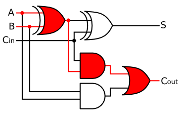

|  |
Classical Digital Design Week 1 |
Learning Outcomes – After completing this module, you will be able to:
- Recall the process for designing combinational logic circuits by hand.
- Recall the process for designing sequential logic circuits by hand.
Learning Activities - To meet these learning objectives, you should do the following:
- Review: Chapters 4 and 7 textbook
- Do: EELE 261 Review Problem Set (MC quiz)